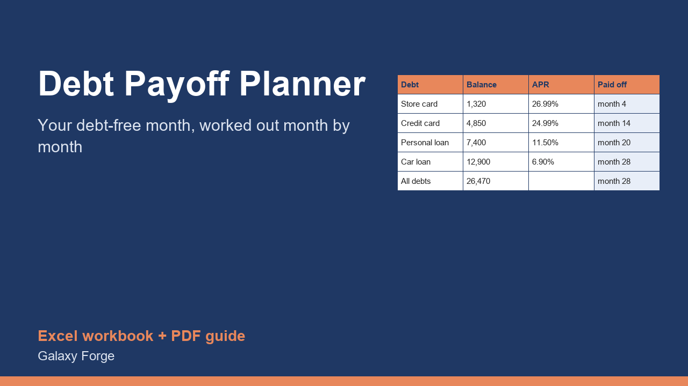

A real month-by-month payoff schedule for up to six debts: your debt-free month, total interest, and how much you save against paying minimums only.
Paying only the minimums keeps most debt alive for years, because most of each payment goes to interest. The fastest way out with the same money is to pay every minimum, put everything extra on one debt at a time, and when that debt is gone, roll its whole payment into the next one.
This planner calculates that plan month by month for up to six debts, for up to ten years: the balance of every debt every month, the month each one is paid off, the month you are debt-free, and the total interest. It also estimates what the same debts would cost if you paid minimums only, so you can see the interest you save.
You choose the order. List the highest interest rate first for the avalanche method (the cheapest), or the smallest balance first for the snowball method (the quickest early wins).
1) On Debts, enter each debt in the order you want to attack it: name, current balance, annual interest rate (APR) and minimum monthly payment. 2) On Plan, enter the total you can pay towards all debts every month. It must be at least the sum of the minimums. 3) Read Plan: your debt-free month, total interest, and the interest saved compared with minimums only. 4) On Debts, each row now shows the month that debt is paid off. 5) Try a second order (snowball versus avalanche) or a higher budget and compare.
Price: $12, one-time. Download: debt_payoff_planner.xlsx (Plan, Debts, Schedule) and this guide. Works in Excel 2016 or later, Excel for Mac and Excel on the web; opens in Google Sheets and LibreOffice.
New product, listed 2026-10-23: no sales or reviews yet. Example figures in the workbook are illustrative.
This workbook is a budgeting aid, not financial, credit or legal advice. It assumes fixed interest rates and that you make every payment on time; lenders' real statements may differ slightly because of daily interest and fees.